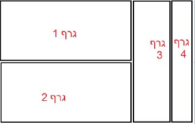

avihuh0
שלום לכולם!
אני זקוק לעזרה קטנה בענייני גרפים ואם יש מישהו שחזק בתחום אשמח לעזרה.
אני צריך להדפיס בפעם אחת 4 גרפים, עם גדלים שונים לכל אחד.
יש לי כבר קוד לכל גרף בנפרד והם טובים.
הבעיה שלי זה החיבור שלהם לגרף אחד.
ניסיתי קצת עם subplot אבל לא כל כך הולך…
דוגמא לאיך אני מתכנן :

תודה רבה 
orronai
avihuh0
תודה רבה,
אבל כבר חרשתי את גוגל ולא מצאתי מענה לבעיה שלי.
בגלל שכל גרף הוא יחסית “מיוחד” אז בSUBPLOT" הוא משתבש ולא מוצג כמו שצריך
אם יש לך ידע בנושא אשמח לעזרה
orronai
אין לי ניסיון בנושא, אפילו פחות כנראה ממך שניסית להתעסק עם זה.
הדוגמא הזו, עם קצת משחק אני בטוח שתביא לך את התוצאה שתרצה:
את המשחק עם המספרים אשאיר לך
eyalmerav
מוזמן לפנות אליי בפרטי
ואנסה לעזור לך
//צונזר, הפורומים נפתח לציבור//
איל